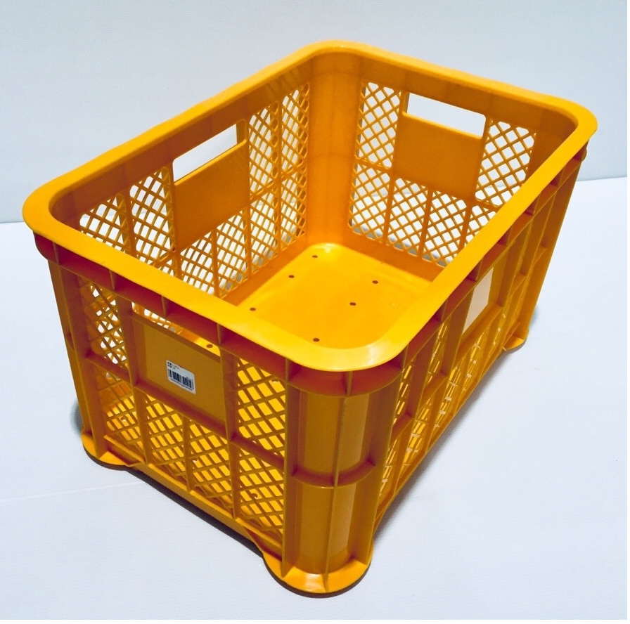

IKEAのシンクでガーデンシンク
1 安価な簡易ガーデンシンク
IKEA のシンク( FYNDIG =はめ込み式シンク１ボウル；4,900円)を使って お金 と 時間 をかけずに簡易なガーデンシンクを作りましたので紹介します。
まずは外観を見てください（図1）。
図1: IKEAシンクを使った簡単ガーデンシンク
この写真を見ただけでほとんどの方は「へぇ～」「あぁそうか」とお分かりいただけると思います。
シンクを入れた収穫コンテナの下にもう一つコンテナを置き、その下にコンクリートブロックを2個置くだけです。
これに 散水ノズルスタンド を取りつけると図2のようになります。 これで作業はおわりです。赤丸についての説明は「3.2」節をみてください。
図2: IKEAのシンクと収穫カゴで畑の流し
2 使用した部材
| 部材名 | 入手先など |
|---|---|
| ステンレスシンク | IKEA FYNDIG はめ込み式シンク1ボウル, 46cmx40cm |
| 散水ノズルスタンド | JEJアステージ(JEJ Astage 散水ノズルスタンド SNS-80 |
| 採集コンテナx2 | どこのホームセンターでも売ってます。ちなみに図3 はKAINZのものです |

図3: ガーデンシンクの台として使った採集コンテナ（KAINZ）
3 補足説明
3.1 ステンレスシンク
FYNDIGは天板をくり抜いてはめ込み式で組み立てるシンクです(注2)が、 排水系の標準付属品以外の余計なものは何もついていません。 サイズは46x40cm。価格は排水系付属品込みで4,900円（税込み）。
ガーデンシンク専用の台付きシンクは、ネットやホームセンターで多くの製品が販売されています。価格とステンレスの しっかり感 でこれを選びました。
3.2 散水ノズルスタンド
簡単な仕掛けですが、これがあるのと無いのとでは使い勝手が大ちがいです。 採集コンテナは 板厚 が薄いので、図2の 赤丸のように適当な木片（濃い茶色の直方体）を何本かの結束バンドでとめておきます。
3.3 採集コンテナ
積み上げることを前提にしてありますから、下の段のコンテナとはカチっとハマって横ずれなどは起きません。下の段のコンテナは30年ほども昔のものだと思います。色もあせているし紫外線でプラスティックがザラザラになっていますが、問題なく使えます。
3.4 排水ホースの引き出しかた
採集コンテナから排水ホース（FYNDIGの標準付属品）を引き出すための穴は、 ニッパ でパチンパチンと切って空けます。採集コンテナの強度に影響を与えないようにコンテナのフレーム部分を避けて メッシュの部分 に穴がくるようにしましょう。
排水パイプは適当に 結束バンド で採集コンテナに固定しておきます3。
4 なぜガーデンシンク？
かねてから畑に1台ガーデンシンクがほしいなぁと思っていました。
野菜を洗ったり、泥のついた手を洗ったり、作物に散水するためにじょうろに水を張ったりする他、BBQをやる際の食器や食材を洗ったり・・・。
その都度、屋内にもどりキッチンのシンクを使うのはとても面倒くさい。
一番の問題は、当地では冬期には 積雪がメートル単位 になります。 小洒落たガーデンシンクを屋外に作っても、ひと冬で壊れてしまいます。 なので第一条件は
冬になったら簡単に分解して物置に格納できること
それプラス、とにかく お金 と 手間ひま をかけずにすぐに使えること。
ネットやホームセンターで探索していましたが、 IKEAのFYNDIGがこんなふうに使えることで、長年の懸案が解決しました。ほんとうにしあわせです :satisfied: